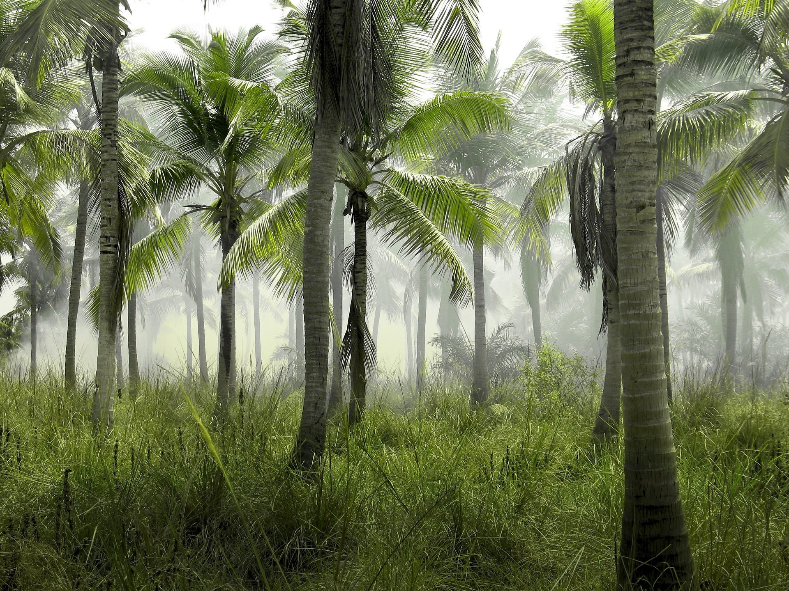
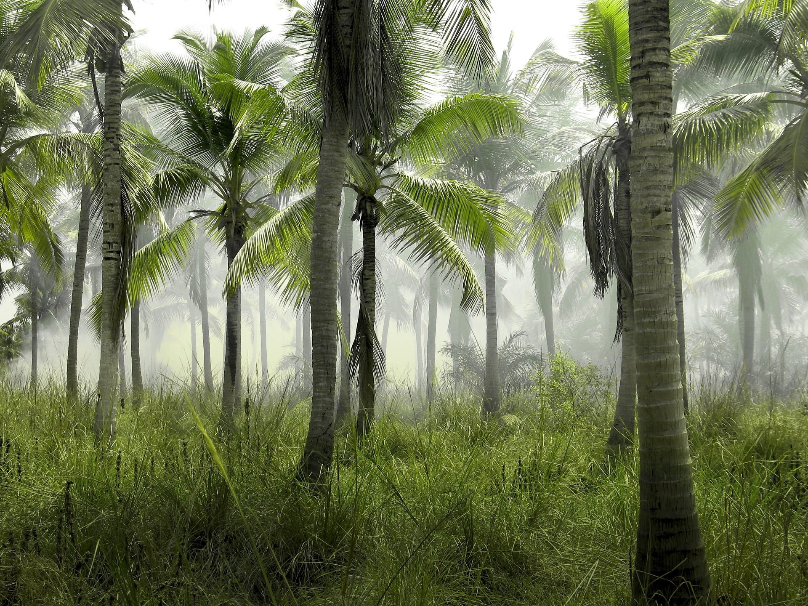

A ecologia apresenta duas subdivisoẽs: autoecologia e sinecologia. Na autoecologia, o objeto de estudo é o indivíduo ou uma determinada espécie, sendo, nesse caso, por exemplo, estudado como o meio pode influenciar no comportamento, fisologia e morfologia da espécie. A sinecologia, por sua vez, estuda as comunidades, sendo observado não apenas uma espécie, mas sim diferentes organismos e como eles se associam.
 
